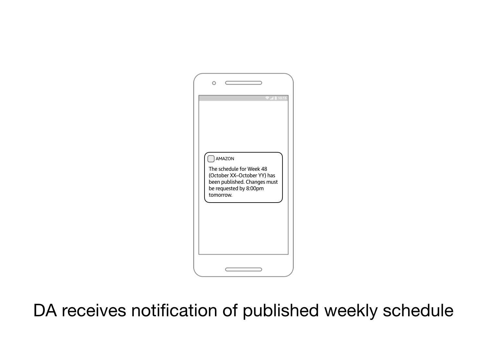
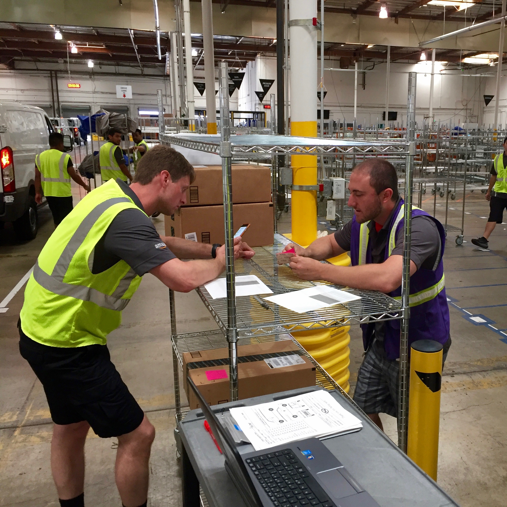
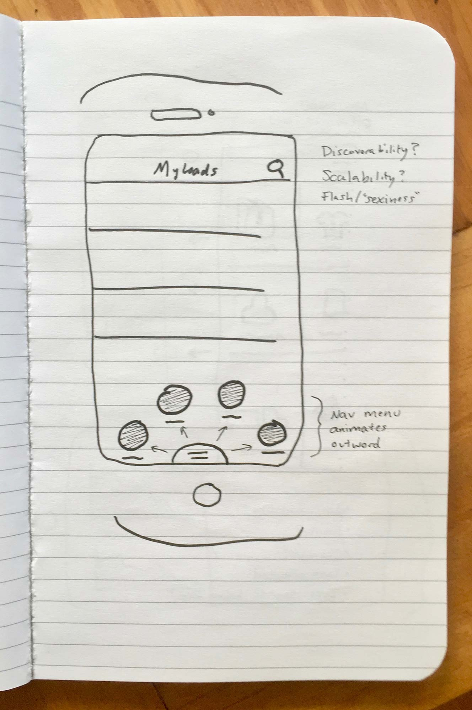
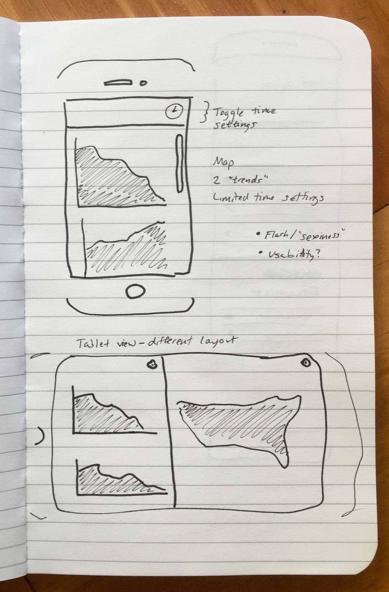
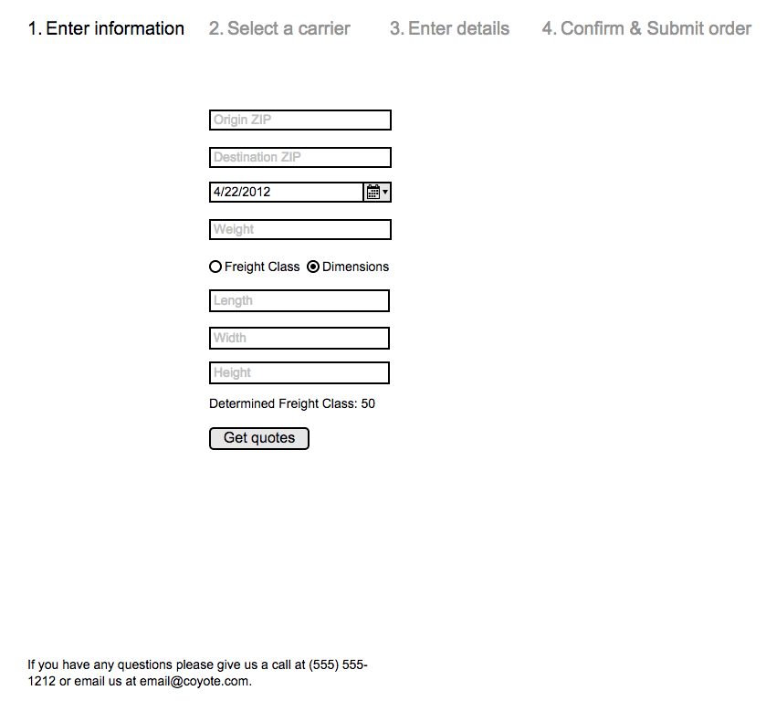
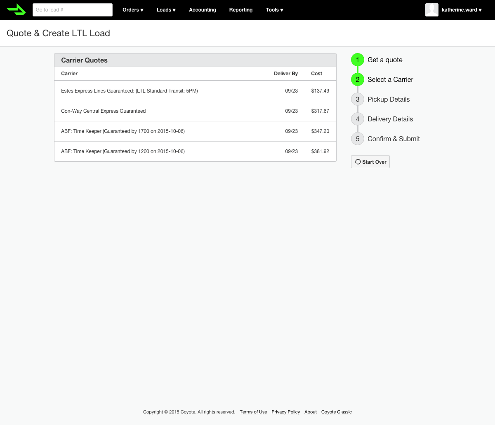
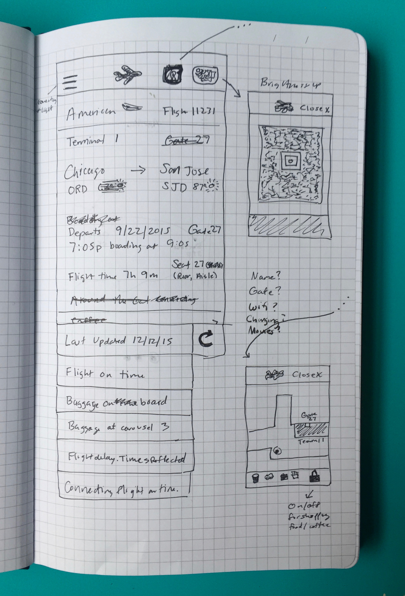
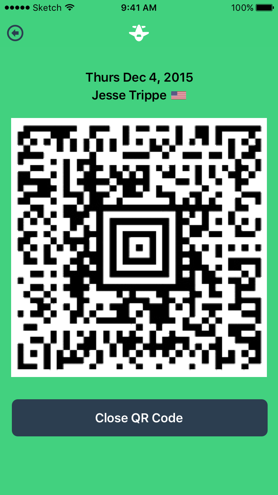
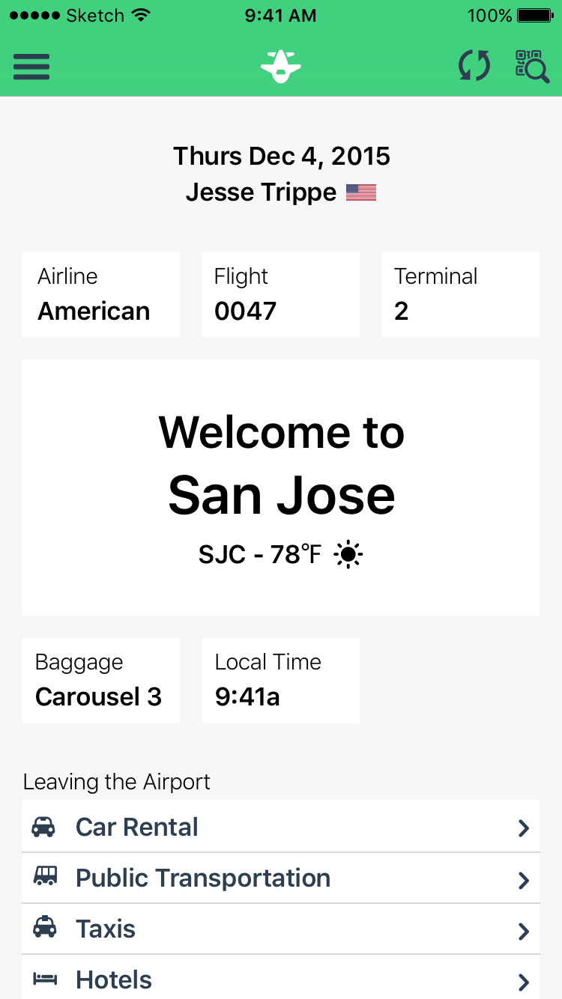

Jesse Trippe
Introduction
Work Experience
2016–Present • Amazon
UX Designer
2011–2016 • Coyote
Lead Product Designer
2011 • Obama for America
Front-End Developer/Designer
2015–2011 • Freelance
Designer/Front-End Developer
Projects
Case Studies & Walkthroughs
Amazon Scheduling
New Addition to Web App
Role
UX Designer
Duration
Six Months
Jan 2018 – Jul 2018
Define the Problem
Amazon launched a last-mile entrepreneur delivery program. Small companies need to schedule drivers and communicate capacity and schedules to Amazon.
Project goals
- Enable driver-route affinity
- Reduce manual communication touch-points between companies and Amazon
- Provide a scheduling solution to new companies
- Recommend best-practices
- Give Amazon insight into driver capacity
Scrappy Solution
- Enabled driver-route affinity
- Designed by developers and PM
- Collect capacity and driver names
- Unblocked the business
Visited North America & UK sites to observe workflows. Sent online user survey for statistical metrics.
Online spreadsheets and 3rd party apps to schedule drivers weekly. Providing Amazon with list of drivers repetitive and of little value.
Define the Users
Dispatchers (Primary)
- Responsible for weekly scheduling of drivers
- Organize and account for morning call-offs
- Working off a laptop in-station
- Helping load vans and other tasks throughout the station
- Use chat apps to communicate with drivers and share schedules
Drivers (Secondary)
- Receive schedule 1-2 weeks in advance of delivery day
- Prefer recurring schedule to plan personal life
- Have mobile device, use Amazon device for delivering
- Extremely busy throughout the day
Design Sprint
Using survey results and research, brainstormed using "how might me" statements. Organized statements into categories and features.
Problem Statement
DSP schedulers spend 6 hours every week managing driver schedules using 3rd-party and homemade tools that lack integration to Amazon’s systems. The North Star vision is to make the process so simple that a single owner can manage 40+ drivers without dedicated support staff.
Interviewed Amazon teams already working on scheduling solutions and researched 3rd party solutions.

Presented findings to product, design, and tech teams. Building a robust scheduling tool would solve both the users' and Amazon's needs, eliminate reliance on 3rd-parties.
Wireframe Exploration
Designed both desktop and mobile solutions, with both driver and scheduler as users. After countless iterations, chose a direction.
Leadership Presentation
Built storyboard and presentation to fully explain scheduling, highlight happy path, and introduce wireframes.


Develop Launch Plan
Developed launch plan to release necessary features first with additional screens and features released in follow-up sprints.
Final Design & Prototype
Built prototype using pattern library, Sketch, and Invision. Took to field and conducted video interviews for testing.

Feedback used to prioritize empty states, help menu and content, links in new driver onboarding email notifications, and added scheduling content to training among other features.
Build
Built front end based on phased launch plan. Weekly meetings with development team. Designed for various contraints and needs uncovered in development.
Launch
Aug 2018 launched responsive scheduling experience consisting of weekly template, weekly and daily schedules, and time-off.
Adoption
- 93% of ~2100 companies used weekly/daily Scheduling.
- 31% used Scheduling templating citing discoverability and learning reason not adopting.
- Provided Amazon capacity with network-wide 94% driver reliability rating which was previously unknown.
- Confirmed known missing features of driver driven actions (e.g. trading shifts, requesting vacation, etc.), company to driver communication (e.g. delivering schedule, approving days off, etc.), and a mobile optimized scheduling experience for handling exceptions.
Next Steps
- Driver facing mobile experience to receive and makes change to schedules.
- Add more inline and in-app help/discoverability/learning features.
- Add scheduling best-practices and recommendations.
- Scheduler facing mobile experience to make changes on the go.
Amazon Dispatch
New Addition to Web App
Role
UX Designer
Duration
Four Months
Sep 2017 – Feb 2018
Define the Problem
Small Amazon contracted delivery companies in North Amaerica gained access to an internal tool to track drivers. This became a security issue and needed to be revoked.
UK delivery companies did not have access to this tool. Instead relied on emails and phone communication to monitor driver progress and location.
Project goals
- Replace and deprecate internal tool.
- Improve or maintain current delivery metrics.
- Design experience for dispatcher (rather than internal station operator).
Visited location stations to observe dispatching responsibilities and usage of current tool.

Went on driver ride-alongs to see the driver-side of on-road tracking.

Met with Amazon operations teams to understand their needs. Developed a timeline and scope for the project.
Define the Users
Dispatchers (Primary)
- On a laptop in station tracking drivers.
- Answer questions from drivers throughout the day.
- Spends an hour per-day swapping routes in the morning based on route location, difficulty, and call-offs.
- Per 20 routes, ~3 drivers call-off daily.
- Answer questions from in-station Amazon Operators on status of drivers and routes.
- Mental model - fantasy sports or retail store manager.
Amazon Operators (Primary)
- On a laptop in station tracking drivers.
- Only focused on exceptions.
- Have minimal contact with drivers.
- Ultimately responsible for packages getting delivered successfully.
- Somewhat chaotic day.
- Mental model - air traffic controller or stock broker.
Market Research
Wireframes
I wireframed a handful of ideas, and, along with the Product Manager, decided on a design approach to move forward with. I then took these wireframes to a local delivery station to test my assumptions and get feedback.
Define the Scope
Worked with PM to define scope of project
- Support day-of scheduling changes and route-swaps.
- Provide route list, status, stop and package list.
- Provide information needed to help drivers.
- Show high-level driver performance metrics.
Explore the Market
- UPS
- Amazon Orders
- C.H. Robinson
- Kayak
Sketching
Navigation
- Circular navigation
- Springboard navigation

Trends & Loads
- Visibility section
- Separates concerns
- Define load details


Wireframes
Sign in &
My Loads
- Sign in screen
- Define list of loads
- Start of internal user testing

Visibility &
Load Details
- Sell approach to stakeholders
- Decide needed attributes for users


Search vs. Notifications
- Debate amongst team on value
- Calculated business impact, gathered customer feedback on prototype
Final Designs


User Testing Modifications
- Move phone numbers to details
- Make Loads default screen
- Explore mapping section in Trends
- Notifications instead of universal search
Results
- Increase on-time loads:
95.5% (+3.5%) of current loads deliver on-time - Reduce calls to dispatch from customers:
23% (-1.9%) of loads require one call - Increase customers closed per sales meeting:
Unknown
Coyote Howl
Mobile App
Role
Designer &
Front-End Developer
Duration
Four Months
Sep 2015 – Dec 2015
Define the Problem
Kick-off meeting with stakeholders (Outside Sales) and Product Manager. Stakeholders getting requests from customers for a customer-facing app.
Held 12 user-interview sessions with current customers, digging into user problems and uncovering possible high-level features.
After evaluating user-interview notes and sessions, PM and myself theorized we could improve multiple business metrics (calls to Customer Service per shipment, on-time percentage) with solution.
Held 10 Customer Service observation sessions to record and eventually categorize calls. Afterward, came up with features the app could easily solve.
Met with Sales to dig deeper into their needs, trying to figure out who their customer was and what features they were looking for.
After summarizing findings, wrote a 1-pager to present to leadership for alignment and buy-in. After receiving approval we finalized the problem statement and started defining success metrics.
Refined and Expanded Problem Statement
Facility Users print lists of Coyote loads daily which often become outdated, leading to miscommunication, delays, and Customer Service phone calls.
Facility Suppliers lack visibility into the progress of loads which creates anxiety and adds to uneccessary phone calls.
Decision Makers, while comparing shipping partners, see the lack of a customer-facing app as an ommission in Coyote's service offering.
Success Metrics
- Increase on-time loads:
92% of current loads deliver on-time - Reduce calls to dispatch from customers:
24.9% of loads require one call - Increase customers closed per sales meeting:
Unknown
Known Constraints
- Multiple Coyote Apps
- Limited Color Palette
Explore the Market
- UPS
- Amazon Orders
- C.H. Robinson
- Kayak
Define the Users
Facility Users (Primary)
- On their feet throughout the day
- Organizing unloading and loading of trucks
Facility Suppliers (Primary)
- At a desk throughout the day
- Needs to watch important shipments after hours
Decisions Makers (Secondary)
- Being pitched Coyote's services in sales meeting
- Limited time exploring the app
- App is without customer's data
- Interest in freight network at high level
Sketching
Navigation
- Circular navigation
- Springboard navigation
Trends & Loads
- Visibility section
- Separates concerns
- Define load details
Wireframes
Sign in &
My Loads
- Sign in screen
- Define list of loads
- Start of internal user testing
Visibility &
Load Details
- Sell approach to stakeholders
- Decide needed attributes for users
Search vs. Notifications
- Debate amongst team on value
- Calculated business impact, gathered customer feedback on prototype
Final Designs
User Testing Modifications
- Move phone numbers to details
- Make Loads default screen
- Explore mapping section in Trends
- Notifications instead of universal search
Results
- Increase on-time loads:
95.5% (+3.5%) of current loads deliver on-time - Reduce calls to dispatch from customers:
23% (-1.9%) of loads require one call - Increase customers closed per sales meeting:
Unknown
LTL Quote & Ship
New Feature to Web App
Role
Designer
Duration
Three Months
Oct 2015 – Dec 2015
Define the Problem
Customers rely on competitors to quote and ship loads that don't require a full truck. These have low overhead and good margins. Coyote is currently missing this opportunity completely.
Success Metrics
- Quote 500 shipments per week
- Book and ship 100 LTL loads per week
Known Contraints
- 3rd party API with requirements
- Lack of business knowledge
- Experience limited to poorly designed implementations
- Overwhelming number of inputs required
Explore the Market
- Saia LTL Freight
- Freightquote
- uShip
Define the Users
Facility Users (Primary)
- Responsible for day-to-day freight management
- Performs many tasks in Coyote TMS
- Uses competitor's quoting and LTL services
- Stationary throughout the day
- Entering information off printouts or emails
Customer Ops Reps (Secondary)
- Acting on their customer's behalf
- Rarely use Coyote TMS
- Use competitor's quoting and LTL services
- Stationary throughout the day
- Gathering attributes over email or phone
Sketching
Quote Inputs
& Results
- Step Form Wizard
- Timeline
- One app for quoting and building
Details &
Thank You
- Delay additional form fields until needed
- View built load or create another

Wireframes
Initial Form &
Quote Results
- Extras on-demand
- Summary persistent throughout
- Quote UI needs
- Errors from 3rd party API




Initial Form &
Quote Results
- Authenticated verse new user
- Borrow input page from TL load builder
- Summary before submission
- Thank you message with instructions


Early Designs
Finalizing and Submitting
- Single page for final inputs
- Reduced steps in wizard
- Overwhelming
- Confusing on what action to take next

Final Designs




User Testing Modifications
- Simplify previously used pickup location
- Reduction of initial inputs
- Support saving a quote for later
Results
- Quoting 140 (360 short) shipments per week
- Booking and shipping 43 (58 short) LTL loads per week
My Tasks
New Feature to Web App
Role
Designer
Duration
Four Months
Sep 2015 – December 2016
Define the Problem
Make it easier and encourage dispatchers and drivers to update loads and fulfill document requirements on Coyote's TMS platform.
Success Metrics
- Currently 22% of updates "no-touch"
- Meet or exceed 50% ("Take 50")
Known Constraints
- Internal reps lack of experience
- Internal reps enabling
- Breaking reliance on phone calls
- Replace landing page
- Losing highly used functionality
Explore the Market
- Trello
- Clear
- Basecamp
Define the Users
Dispatchers (Primary)
- Familiar with Coyote TMS
- Mostly stationary throughout the day
- Entering information from emails, phone calls, and load documents
- Tracking a large amount of loads and trucks
Drivers (Primary)
- Primarily use mobile app
- Occasionally use Coyote TMS
- Entering information from printouts or memory
- Tracking small number of loads
Sketching
My Tasks Page
- Task by type
- Links to section in load details

Wireframes
My Tasks
- Information needed to define a load
- Prototype built and tested
- Easy to identify tasks
- Cumbersome to complete

Modifications
- Add summary panel
- Make tasks actionable
- No need to leave page
- Maintain link to details
- Map for visual interest and load identification
- Severely increased development time


Results
- Fluctuate between 55% and 65% of updates via EDI (electronic update), CoyoteGO, or Coyote TMS
- 14% increase in two days
- Did not experience backlash of missing feature
Boarding Pass
Mobile App Exploration
Role
Designer
Duration
One Week
Nov 2015
Define the Problem
Airports and flying often feels overwhelming and stressful. A boarding pass should attempt to solve this.
But it doesn't.
Success Metrics
- App downloads and usage
- Customer service surveys
- App store feedback
Define the Users
Flyers (Primary)
- Limit time at the airport
- Wish to feel organized and informed
- Reduce stress
TSA Agents (Secondary)
- Ensure safety
- Efficient and organized
- Communicate effectively
Flight Attendants (Secondary)
- Provide great customer service
- Calming and efficient
- Perform in a fast-paced environment
- Follow protocols accurately
Qualities of an App
- Efficient
- Reduce uncertainty and frustration
- Calming
- Easy to visually scan
- Up-to-date
- Completeness without overwhelming
- Organized
Explore the Market
- iOS Wallet/Passbook
- Google Now
- Printed Boarding Pass
- Airline Specific Apps
- TripIt, WorldMate, TripRider
Known Constraints
- Technology
- Adoption
- Capabilities
- Time
Sketching
Sketch 1
- Add texture with map background
- Swipe left/right for map/QR code

Sketch 2
- Separate concerns using tabs
- Hide unnecessary information
Sketch 3
- Display all information at all times
- Keep QR code on separate screen
- Visual hierarchy and typography for organization

Initial Design

Departing
- Calming, high-contrast colors
- System font for familiarity and readability
- Top to bottom of visual importance/flyer's timeline
- Easily scannable
- Supplemental information available

Scanning
- Button always available in case scanning is needed
- "Snaps" to edges of screen without moving to ensure easy, confident scanning
- Big, clear ways to return to main view
- Communicates language to other users for effective communication

Updating
- Automatic updating of the app
- Push notifications for alerts
- Allow manual updating of the app
- Communicates what information is updating

Arriving
- Automatic updating upon landing
- Remove unecessary information
- Add baggage information
- Updated time in case phone is stuck
Modifications
- QR code always visible
- Remove QR icon button
- Remove icon button from QR screen
Results
- Due to API and time contraints, this app was not built